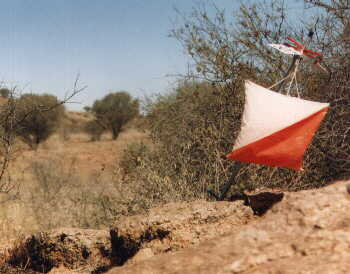

New Zealand Rogaining Association
Life Members
In October 2002 the first AGM of the NZRA was held. Present were four people who have been contributing to rogaining even before then and continue. They are life members of NZRA.

Peter Squires
Sport Otago 45 deg South
Pisa Range, Otago
DOC (Ken & Anitra Dowling)
Overall:Tony McNulty, Richard Matthews
Mens Open:Tony McNulty, Richard Matthews
Mens Vet:Jim Kerse, Barrie Foote
Mixed Open:Dave Laurie, Andy Buchanan, Vivienne Prince
Mixed Vet:Pete Squires, Anne Kennedy, Bill Kennedy
Mens Open:Tony McNulty, Richard Matthews
Mens Vet:Jim Kerse, Barrie Foote
Mixed Open:Dave Laurie, Andy Buchanan, Vivienne Prince
Mixed Vet:Pete Squires, Anne Kennedy, Bill Kennedy